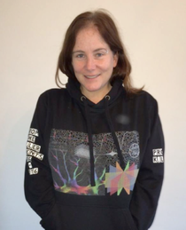
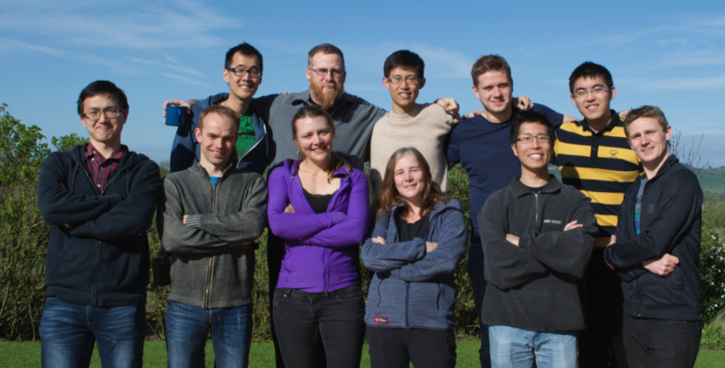
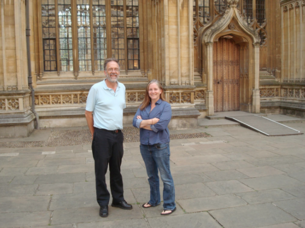

|
Figure 1. Karla Miller adorned with a student’s research.
BY GUEST AUTHOR ERIKA RAVEN This post originally appeared on the ISMRM blog and in the MRM Highlights magazine. Republished (and slightly modified) with permission. Karla Miller is a professor of biomedical engineering at the Oxford Center for Functional MRI of the Brain (FMRIB, pronounced “fim-rib” for short). She directs the FMRIB Neuroscience Physics group, which specializes in many projects, from pulse sequence development to biophysical tissue modeling. More recently, she’s been a key figure of the UK Biobank, a mega-sized data initiative charged with imaging 100,000 adults by 2022. Karla is also a plenary speaker at the upcoming OHBM meeting in Vancouver, education chair of this year’s ISMRM meeting in Honolulu, and is poised to chair the entire ISMRM program for the 2018 meeting in Paris. In our interview, Karla makes connections between the many themes in her life, which ultimately are resolved by finding the right balance.  Figure 2. Karla Miller (fourth from left, bottom row) and members of the Neuroscience Physics group at Oxford University. Erika Raven (ER): You’re one of the few people that feel comfortable straddling the line between ISMRM and OHBM. Do you see a synergy between these two societies, or would you rather they keep running on parallel tracks? Karla MIller (KM): I think it’s incredibly important that people who are developing MRI techniques don’t do so in a vacuum. I’ve benefited tremendously from being at the FMRIB center. Although I’m in a physics group, I rub elbows with people on the analysis and neuroscience side. I think it’s important for people who are developing these sequences to understand how neuroscientists will want to use them. Cross society outreach is something I am keen to do as part of becoming chair of the ISMRM’s annual meeting program committee (AMPC) in about 6 months. ER: How did you first become involved with ISMRM and what led you to become this year’s education chair? KM: I first attended the ISMRM in Philadelphia (1999) and I have attended every ISMRM since. One of the first official roles I held was to serve on the AMPC. The AMPC is the hardest working, but also the most exciting, committee to be a part of. Now for this year’s ISMRM, I am coordinating the education for Hawaii, and then at the Paris meeting in 2018 I’ll be chairing the entire program. I’m incredibly grateful to Dan Sodickson for appointing me - although as the huge task ahead really hits me, I might save my thanks until the meeting is a wrap!
ER: You’ve given many educational seminars. What is it about MRI education that you like? KM: I absolutely love teaching. Beyond it being immensely satisfying to help people grasp difficult concepts, I think it's a good experience for the lecturer to think hard about the material. It’s an interesting challenge - can I do a better job of teaching this to other people than it was taught to me? ER: Your work is multifaceted - can you explain your primary research themes and how those came to be? KM: My training was very much in pulse sequences and image reconstruction. And so I still have a big chunk of my group working in that area. In the past few years, I’ve become interested in the idea that we can improve our acquisitions and reconstruction by taking a lead from how people analyze their data. We tend to think of this as a linear process – you try to get the best data you can and then you analyze it. But there are tricks that we can learn based on how people analyze the data that would enable us to improve the acquisition and reconstruction itself.
ER: I would imagine he would be useful! You also study biophysical modeling and ex vivo imaging of tissue microstructure. Can you tell us about that? KM: We’re acquiring microscopy data so we can close the loop between what is the biophysical model, what is the MRI data, and what is the actual measurable microstructure. The key aspect of our experiments are that we have all three things –MRI and microscopy in the same tissue samples, and a proposed model linking them. By actually having a measurement of the underlying microstructure, it guarantees thatis if you’ve got your model wrong, you are the absolute first person who is going to know. Not just, “can I take a biophysical model and show that it kind of matches the data”, but “can I actually take something that I know reflects the underlying microstructure, make a prediction through some biophysical model, then say - YES - that is exactly the MRI signal that I measured”. And it’s a really hard thing to do. ER: That was like a mission statement! KM: Putting this process to work, we’ve been looking at diffusion based estimates of fiber dispersion. We use microscopy techniques to essentially ask what aspects of the microstructure you need to incorporate to accurately predict what the diffusion signal looks like. It’s a project that has a true palpable output, and interestingly it’s created a signature that we hadn’t expected to find. We’ve now demonstrated that this particular effect also exists in the Biobank data - so it’s a real effect, which is potentially a signature of something biologically interesting. More importantly, we’ve managed to have a first go at what it might look like to actually close the loop of biophysical modeling, microscopy, and MRI acquisition.  Figure 5. Karla Miller with former Ph.D. advisor John Pauly at Oxford University. ER: I really like that turn of phrase, closing the loop. And since you mentioned the UK Biobank, I’ve given myself permission to bombard you with Biobank questions! To start, when did you first become involved? KM: What I’m actually doing right now as you’re asking me this question is looking in my emails to see when I had my first Biobank email logged. 2008! Email from Paul Mathews, basically asking if we would be interested in getting involved in the Biobank. It’s quite a project – scanning 100,000 subjects. And although there is quite a long author list on the paper that we published this year, that doesn’t even begin to cover the number of academics involved, let alone the enormous staff that is entirely dedicated to the project. As one colleague said – its behemoth. In a good way. ER: What do you think will change from having 10,000 scans to 100,000 scans? KM: One of the most exciting aspects of Biobank is that it’s an entirely prospective study: it has no particular disease focus, but is playing the numbers. Most of the participants in this huge cohort have yet to show symptoms of major disease, but we’ll be able to follow their health records as that changes. So, for example, we expect 2000 new diagnoses of Alzheimer’s and 50 new diagnoses of ALS over the next five years from participants who were pre-symptomatic at the time of imaging. The value in Alzheimer’s is obvious, but for rare diseases like ALS, that is a needle in a haystack. You just can’t find those subjects otherwise. It certainly might provide you with markers for tracking response to therapy or disease progression.
ER: It sounds like the translational aspect of this research might become even more important now, such as borrowing techniques from other fields that have already been established and validated for big data sets.
KM: It’s partly techniques and it’s partly culture. The same thing with open science – I know it’s the right thing to do, but there is part of me that thinks, “Ahh!, it’s going to be yet another thing I have to adhere to”. But once we have a culture of doing it, everybody looks back and says, “What were we thinking?” ER: A more general question, what brought you to the academic life? Did you have any major influences that led you down this path? KM: I got very interested in the brain when I was a kid. My mother had to have pretty drastic brain surgery when I was about 12 or 13. It really struck me - the idea that it might fundamentally change who she was. When I went to university, I started out as a psychology major. I was taking a cognitive psychology class in maybe 1995 when I saw functional MRI in a textbook - totally state-of-the-art . I was so impressed with what it had to offer compared to current methods for studying cognition. I also thought maybe the way I could have an impact was to develop the technology and move towards the engineering side. And so it’s kind of nice for me now that I’ve done the engineering side in anger for about 10 years, and I’m able to shift towards getting back to neuroscience. And for me that’s incredibly rewarding. ER: It’s like you’re closing your own personal loop. KM: There’s a theme there, isn’t there? ER: Now for some words of wisdom. What things did you learn along the way that you feel would be important for people who are just starting out? KM: I have to be profound on short notice! Well… Going into science with a great deal of passion, and a great love of what you’re doing is absolutely critical. Particularly if you want to stay in academia, because let’s face it - academia is a tough world to get by in. One of the things I did sort of instinctively early on was to look towards people who were a year or two ahead of me, doing the kind of science I wanted to do. If I have to name names – Brian Hargreaves and Bill Overall. They were my role models. I tried to see what it was that they were doing at my stage to get where they were. That sounds simplistic, but honestly, that was what I did. And it’s good advice. ER: It has come up repeatedly that you frequently go outside your comfort zone. That’s sometimes a scary thing to do – what drives you to change? KM: You know how I would sum this up… For me - and I know this is not true for everyone - being an expert is boring. To some degree, the fact that I’m the one “blah blah’ing” in this interview the whole time, from my perspective, it’s flattering but not stimulating. It would be far more fascinating for me to be asking you about what you’re doing and learning about what you’re doing. Being an expert is, for me, it’s the way you earn the opportunity to be an inexpert - that is the fun bit. That said, I wouldn’t encourage people to just jump from one thing to the next willy nilly, because you’ll never become an expert in anything, and that’s also not good. You have nothing then to leverage. So you have some safe stuff, and some risky stuff, and you’re hopefully pushing your personal envelope the whole time. It’s kind of about finding the right balance.
0 Comments
Your comment will be posted after it is approved.
Leave a Reply. |
BLOG HOME
Archives
August 2023
|
 RSS Feed
RSS Feed